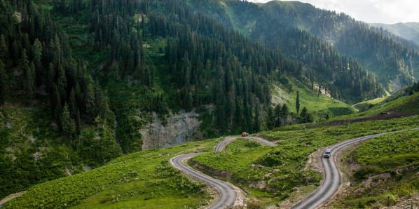
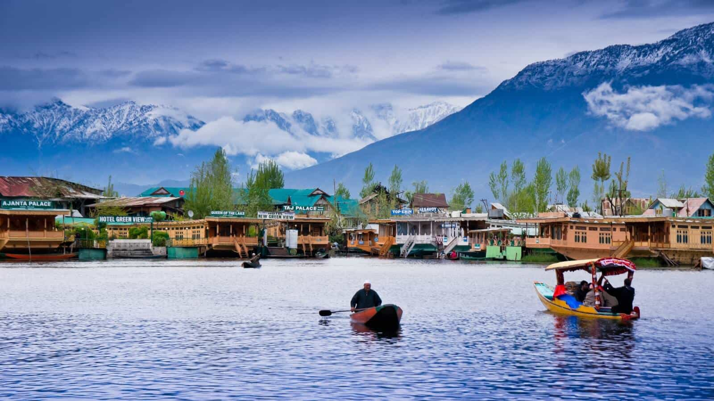
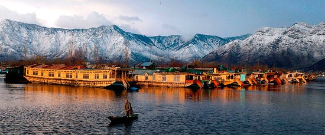

Paradise in india (Jammu & Kashmir)
Prachi Negi 12/06/2022 10:30 114

Jammu & Kashmir the land of beauty,peace and culture.Situated on the head of the country's map.It is known as crown of india ,Jammu & Kashmir has more than whats meets the eye.The journey itself is an emotion .

Soak your memories in a warm cup of Kahwah Tea, while indulging in the varied landscapes of Kashmir. Take in the crisp misty air, while gorging on warm Kashmiri pulao and home-made Rista. Feel your heart synchronize with the gushing waters that travel from the glaciers above. Dust the snow off your shoulders after a long trek up a hill and watch the sun-kissed, snow-capped mountains. A valley between the Great Himalayan range and the Pir Panjal mountain range, Kashmir is a place of beautiful simplicity and pristine natural beauty. Kashmir is painted with a unique culture that keeps you intrigued throughout your journey, from Srinagar to Sonamarg and Gulmarg till Pahalgam..

Kashmir has a variety of terrains ranging from lakes, snow-capped mountains, coniferous kissed hills to glacier fed rivers. On one hand, Kashmir is covered with wild untouched terrain and on the other, there are fields of saffron and orchards of apples awaiting their full bloom. They have a variety of flowers that are a show in itself. They wait, as photographers after photographers attempt to do justice to them..
When I landed at Srinagar, I felt a sense of peace and ease. Nothing felt more soothing than letting your fingers glide through the chill waters of the Dal Lake, while chatting with family on a Shikara boat. The Dal Lake is surrounded by a variety of deciduous trees that promise a colourful show in their fall season. The weather in Kashmir is an experience of its own. The sun rose at five in the morning and set at nearly eight at night, giving its tourists enough time to enjoy the valley, the people and the cuisine.
Kashmir has an intriguing cuisine that kept my taste buds wanting for more. On the first day, I indulged in some Kashmiri Wazwan. The Kashmiri kebabs, rista curry (a meatball curry), Kashmiri pulao and their famous roganjosh are a few dishes new visitors must try as a part of their gastronomic adventure.
A holiday in the midst of a valley is enough to create memories on its own, but what made this trip more memorable to me, were the people and their arts and crafts. The Kashmiris, unlike the political strife that their state has been under, are very peaceful. They are homely and hospitable. While visiting a few handicraft stores, I was intrigued to find that the shawls, craftwork and décors (made out of walnut or maple wood) were made by people in their homes. Instead of building large-scale industries that mechanically produce souvenirs for its tourists, people made handicrafts at home and sold them as business. What I found fascinating about this was that each décor or shawl was unique and never exactly the same and differed from one shop to the other. Thus, it’s a truly unique souvenir that you bring back home.
Kashmir is a wonderful idea for a visit, especially for those wishing to experience teeth chattering temperatures and snow for the first time. Sonamarg and Gulmarg promise a lot of fun in the snow and ensure you fly home with snow-capped memories imprinted in your mind’s eye. 
When there’s snow around, a snow fight is bound to happen, no matter what your age. You’ll even get a chance to fulfil your lifelong dream of building a snowman.
Enticing cold temperatures with snowfall is one of the many things that Pahalgam has to offer. The weather unlike the blistering cold in Gulmarg, nurtures a variety of apples orchards, vast fields of saffron as well as an array of dry fruits. Pahalgam is a wonderful place to visit for its unique parks like Bethab Valley, Aru Valley and Chandan Valley. A morning walk or a short stroll can never do justice to the amount of natural beauty there is to see. Bethab valley has vast sunny lawns spotted with clusters of tall, coniferous trees. There’s a gushing stream cutting through the park that keeps you company while you gaze at the white Himalayan range. 
Kashmir was a wonderful experience and certainly a place that I shall visit often. Even after a week, I realised that there is so much more to explore. I am yet to experience their fall season, their scintillating apples and more of their mesmerizing landscapes.